戻る
アメリカのオーケストラ
- シカゴ交響楽団
-
さすがアメリカ一のオーケストラよ呼ばれるだけあって、持ち味である金管はもちろん、全パートの完成度が高いと思います。
後半のショスタコーヴィチ交響曲11番は、突進するようなパートでも勢いに任せて走ることなく、一切の破綻なく鳴らし切っており、この作品の狂気が際立っていました。
あまりの人間味のなさに若干のサイボーグ味も感じました。。
- ボストン交響楽団
-
曲目はショスタコーヴィチの交響曲6番と11番。
同コンビの同ホールでのショスタコーヴィチのライブ録音が世界最高だと思っているので、大いに期待していました。
しかし、良くない席で聴いてしまったために公平な感想が書けないので、またボストン現地かサントリーホールでリベンジしようと思います。
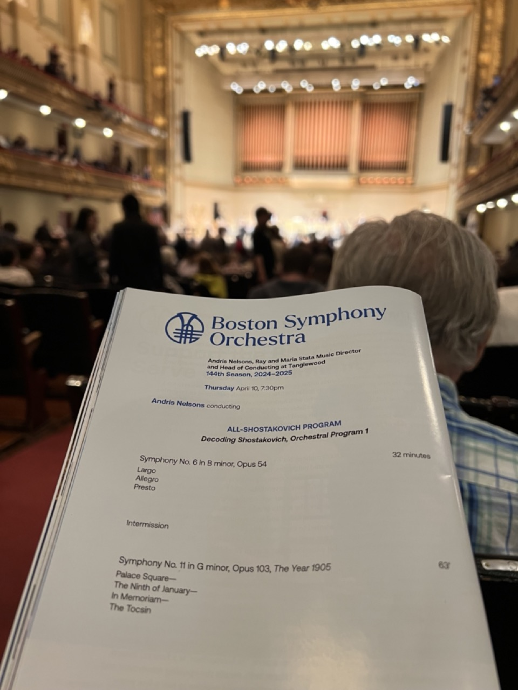
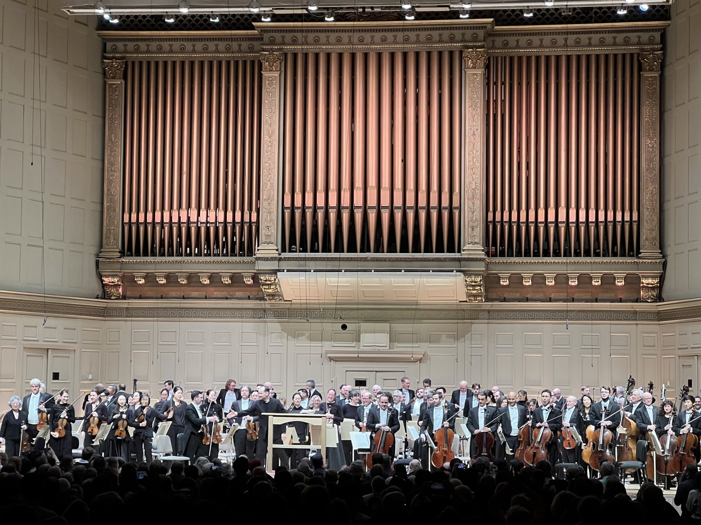
- ワシントン・ナショナル交響楽団
-
コンサートホールのページで書いたように、やはりホールが響かなさすぎて、演奏に入り込むことが出来ませんでした。
翌週にヴァンス副大統領が来て、ブーイングを食らったのが話題になりました。。
- ニューヨークフィル
-
プログラムがプロコフィエフのピアノコンチェルトとショスタコーヴィチの交響曲（しかも15番）ということもあり、NYP の得意分野ではなかったのかもしれませんが、
あまり高い感銘は受けませんでした。マーラー等の大味な曲や、バーンスタインやガーシュウィンといった都会的な地元ものも聴いてみたいです。
いっぽうソリストのチョソンジンの完成度は非常に高く、終始唸っていました。
アメリカの他オケとの違いは、アジア系の団員がとくに弦楽器に多いこと、チケット代がやや高めなことです。
近所のカーネギーホールではよりお手頃に国内外のメジャーオケを聴けるのですが、ニューヨークフィルのチケットもよく売れているので、
どのように顧客需要を分担しているのか気になります。
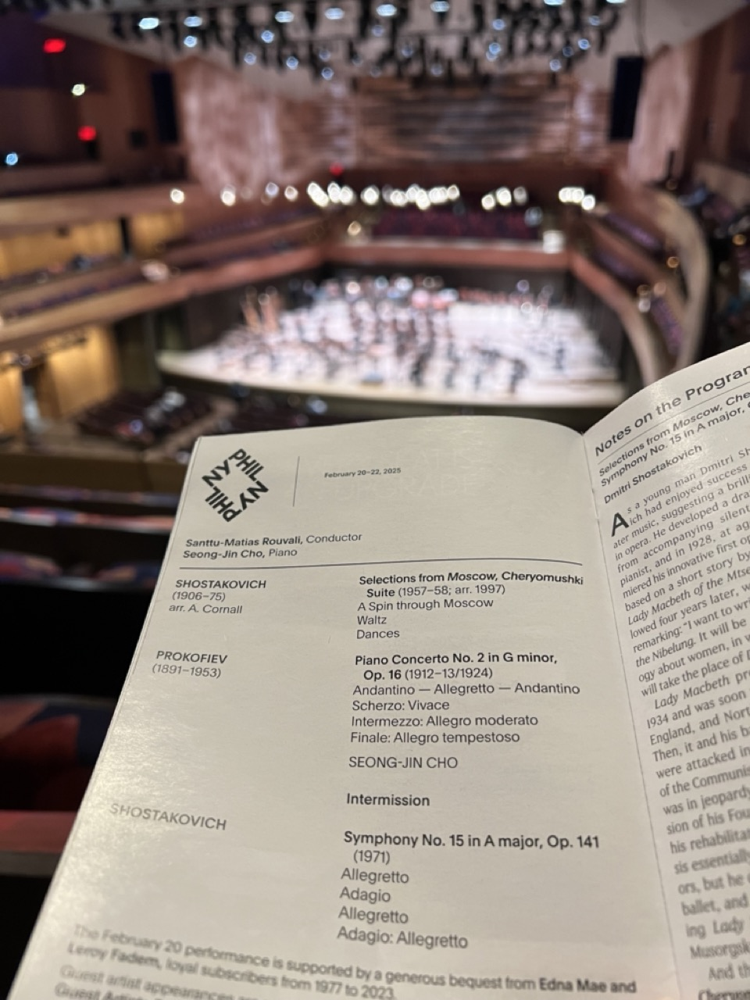
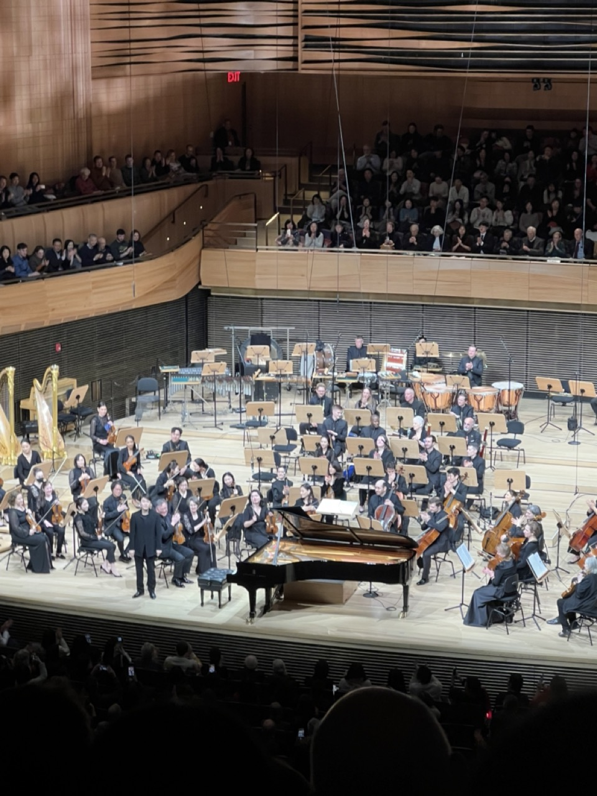
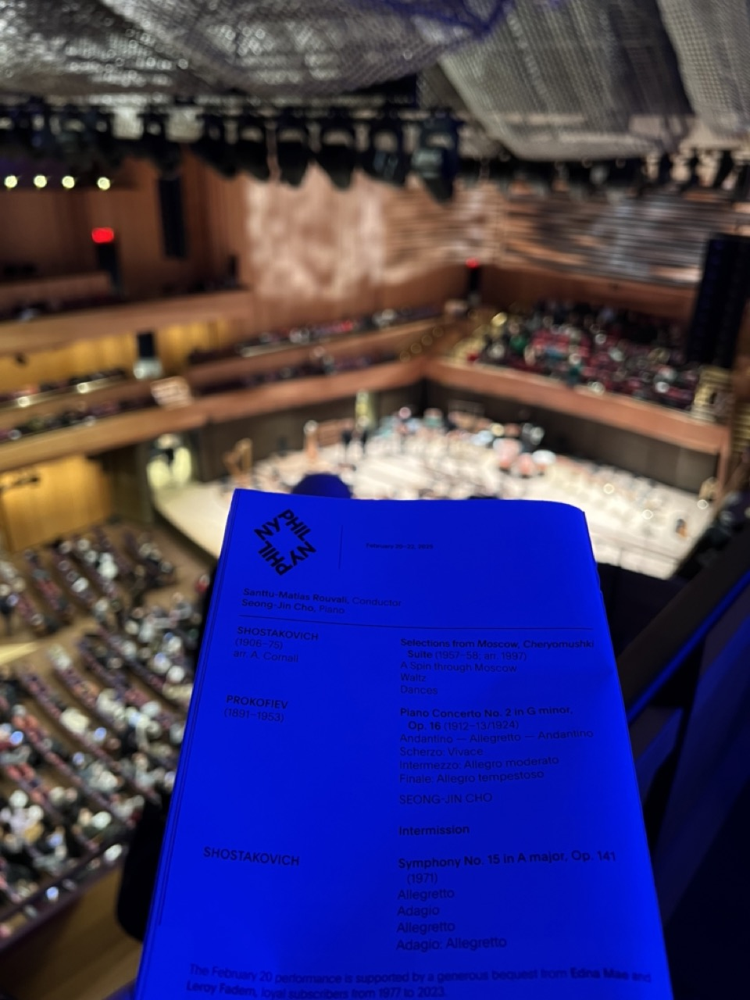
- フィラデルフィア管弦楽団
-
音が華やかでイメージ通りのアメリカのオーケストラという印象です。MTT の指揮も楽しみにしていたのですが直前に出演キャンセルとなり、そのまま演奏活動から引退するとの発表がありました。
カーネギーホールでのマーラー6番は金管（とくにトランペット）が素晴らしく、オケの性格か「悲劇的」なニュアンスは無いものの音量と濃厚な音色に圧倒されてしまいました。
もっと聴きたいオーケストラです。
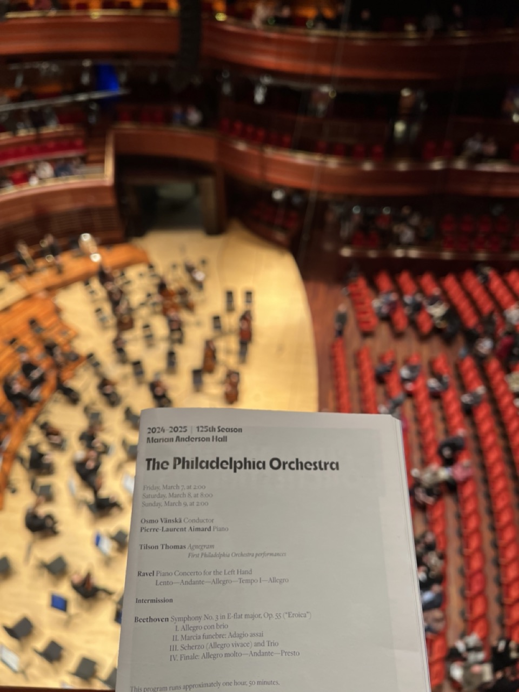
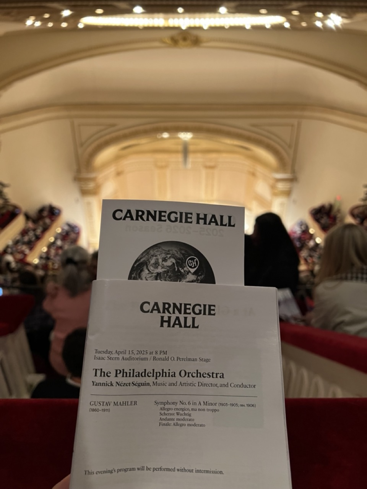
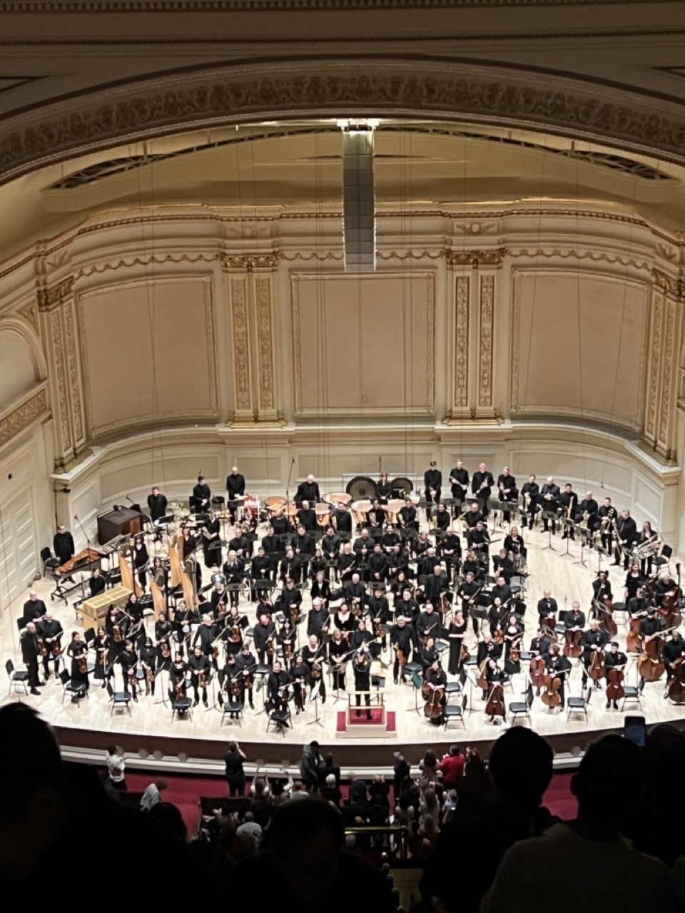
- クリーヴランド管弦楽団
-
ウェルザー=メストは本公演少し前までガンの治療のため指揮活動を休止しており、おそらく久々のカーネギー公演のはずです。
前半はストラヴィンスキーのペトルーシュカ。
春の祭典で見られるようなストラヴィンスキーのエキセントリシティは表に出さず、ペトルーシュカのキュートで茶目っ気のある世界観を最後まで貫き通しました。余計な飾り付けをせずのしのしと進んでいく音楽作りであり、個人技も見事で各自が余裕を持っているようです。
後半はチャイコフスキーの交響曲第5番。前半で受けた印象そのままに堅実な演奏でした。終楽章でもインテンポを貫き、ほとんどの演奏でみられるタメや急加速は排除されていました。ゆえにエクスタシーはないですが、ロシアの慎み深い大聖堂を思わせる演奏でした。
オーケストラ全体として弦はクセが少なく音色は美しいですがやや線が細いかと、金管にも同じ印象を持ちました。別の指揮者でも聴いてみたいと思います。
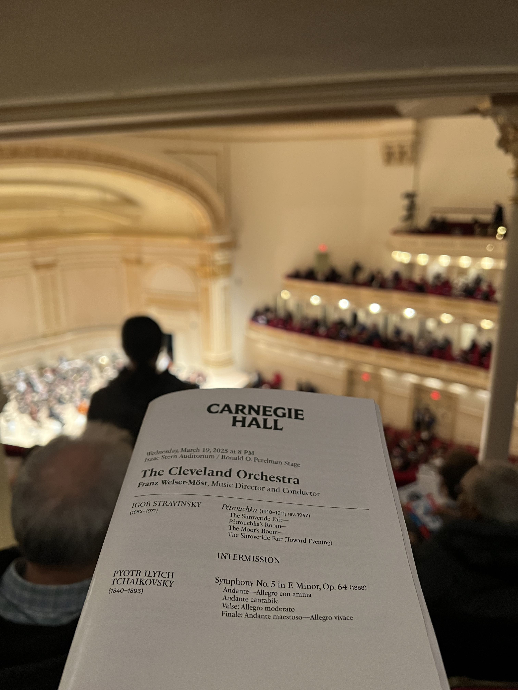
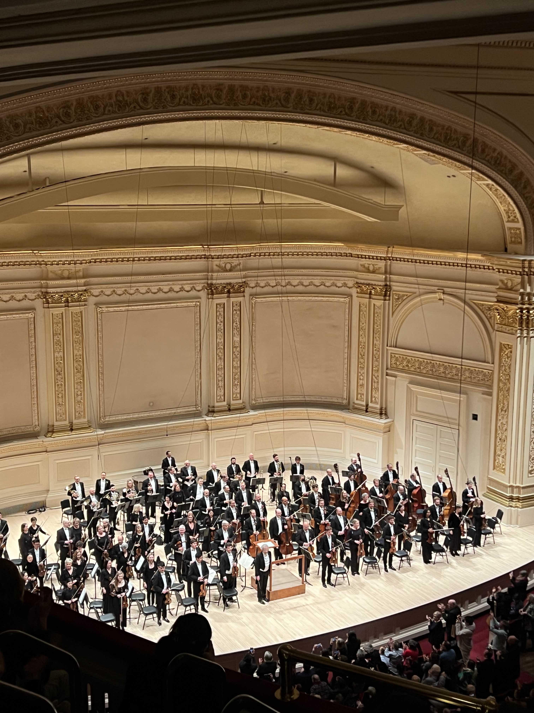
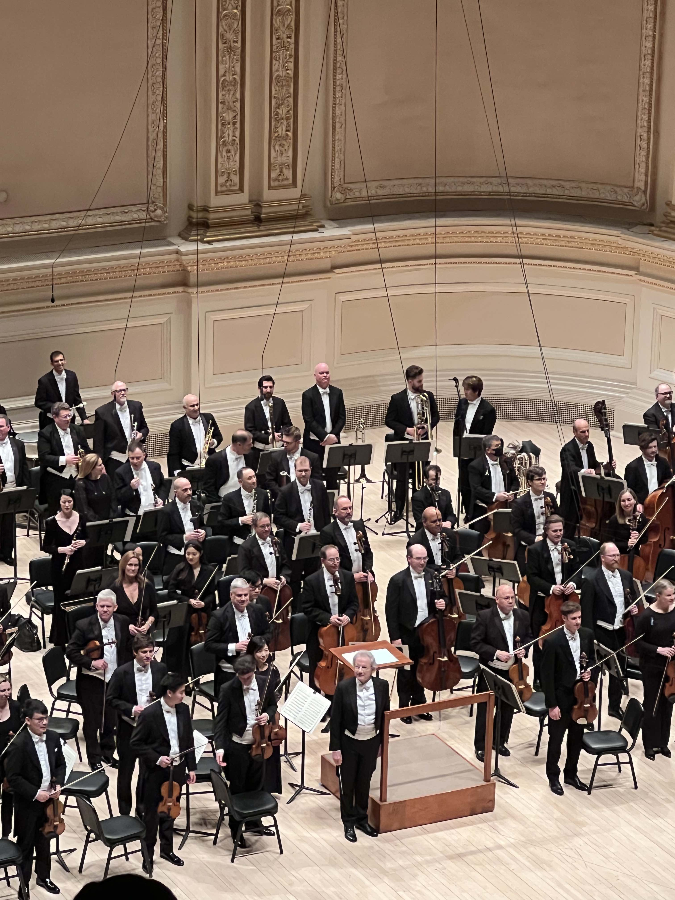
- セントルークス管弦楽団
-
ニューヨークに本拠地を置く楽団。カーネギーホールで年数回公演があるようです。ニューヨークには東京ほど楽団が乱立しておらず、ニューヨークフィルとここくらいのものです。